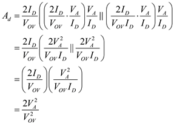

Step 1:
Refer to the circuit diagram of cascode differential amplifier in Figure 8.12(a) in the textbook.
Write the expression for trans-conductance.

 is over drive voltage.
is over drive voltage.
Write the expression for output resistance.
 is the early voltage.
is the early voltage.
 is the drain current.All the transistors have the same channel length, same overdrive voltage and early voltage.
is the drain current.All the transistors have the same channel length, same overdrive voltage and early voltage.
Step 2:
Write the expression for differential gain of cascode differential amplifier.
Substitute for and for.
Substitute  for
for  and
and  for
for  in the equation.
in the equation.

Step 3:
Design differential amplifier for differential gain.
Equate the differential gain to.
Substitute 0.2 for  in the equation.
in the equation.
Rewrite the equation.
Solve for  .
.
Step 4:
Length of the channel is,
 is the early voltage.
is the early voltage.
 is the early voltage per length.
is the early voltage per length.
Thus, required length of the channel  is .
is .
Step 5:
Power dissipation in the amplifier is,
Substitute  for
for  , for
, for  and for
and for
Solve for bias current  .
.
Thus, maximum allowable current for the desired power dissipation is .